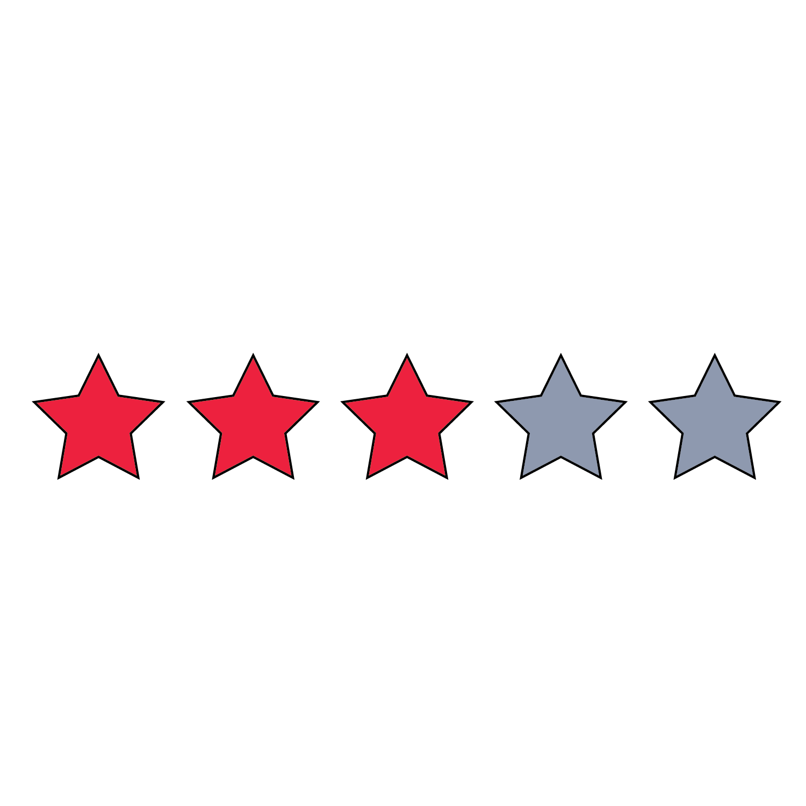

Net worth: 72.7 B USD
Age: Omg so old
Corporate Affiliations: LA Clippers, USA Facts
Behavioral Identifiers: Sweats profusely, slow to adapt to 21st-century trends such as smartphones, social media, and search engines.
Physical Identifiers: Older white man, no eyebrows, tall and bald, often wears Clippers apparel.
Edibility Rating: Definitely edible, maybe a little too greasy.
